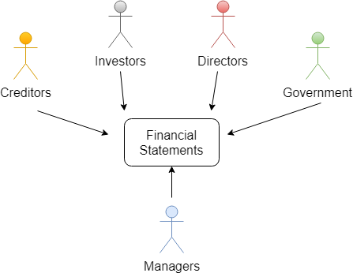

An information system designed by an organization to capture (analyze, record, and summarize) the activities affecting it's financial condition and performance and then report the results to decision makers, both inside, and outside the organization. It is a system of financial recordkeeping.
Accountant
Assists in reporting financial information for decision making, and help it's owners understand the financial effects of those business decisions. The accountant will understand the business, it's organizational form, and account for business decisions. They study the accounting methods, and produce financial statements, while also evaluating them.
Accounting Reports
Used to provide important information about business activities. There are managerial accounting reports, and financial accounting reports
Public Accountant
Provides accounting services to a variety of businesses.
Private Accountant
Typically an employee of the business that is tasked with accounting responsibilties.
Managerial Accounting Report
Includes detailed financial plans and continually updated reports about the operating performance of the company. These are only available to the company's internal users for making business decisions related to production, marketing, human resources, and finance.
Financial Accounting Report
A document that is part of a collection of various financial statements, which are prepared to periodically provide information to people not employed by the business. The main external users of these documents are creditors, investors, directors, and government.

Creditors
These are suppliers, banks, and anyone to whom money is owed. They evaluate a company's financial statements and check it's credit history before allowing it to buy on credit.
Investors
Existing and potential stockholders. Stockholders look to accounting information to assess the financial strength of a business and estimate it's value.
Directors
Member of a company's board of directors. They are elected to oversee the company's managers, and they use financial statements to ensure decisions being made are in the best interest of the company's stockholders.
The Financial Statements
The Income Statement
placeholder
The Statement of Retained Earnings
uses net income, and dividends
The Balance Sheet
Assets, Liabilities, Stock holder's Equity
The Statement of Cash Flows
Describes operating activities
Journal Entries
List of transaction postings
The General Ledger
placeholder
Trial Balance
placeholder
Adjustments
Ensure all revenues and expenses are reported during the period in which
they are earned and incurred. They help to ensure that asset accounts reflect what the
company actually owns or has legal rights to. Liability accounts reflect the obligations of the company at the end of the period.
After adjustments have been made financial statements should present a clear picture of whether or not the business was profitable in the current year, as well as what economic resources the company owns, and owes, at the end of that period.
They give a complete picture of the companies performance that is not misleading.
Adjusted Trial Balance
placeholder
Posting to T accounts
placeholder
Debits and Credits
placeholder
Organizational Forms
Sole Proprietorship
A form of business owned and operated by one individual. The owner is personally liable for all debts, and all income is taxable.
Partnership
Profits, taxes, and legal liabilities are the responsibility of two or more owners instead of just one.
It is more expensive
Typically has more resources
Corporation
A separate entity from both legal and accounting perspectives. The corporation, not it's owners are legally responsible for its own taxes and debts. Legal fees for creating the corporation can be high, and income taxes must be paid by both the corporation and it's owners.
Other
Other types exist such as LLC (Limited Liability Corporation)